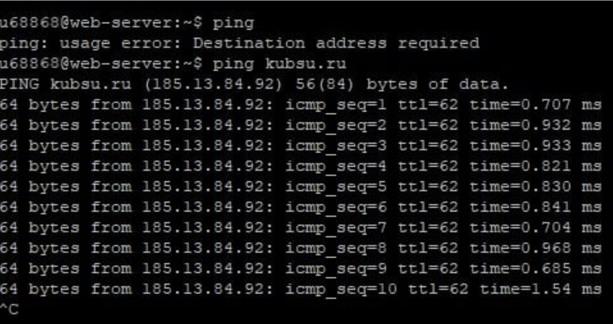
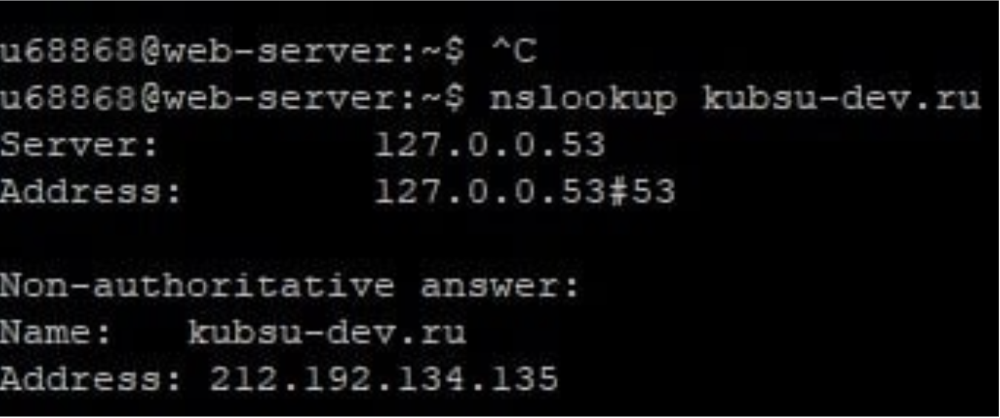
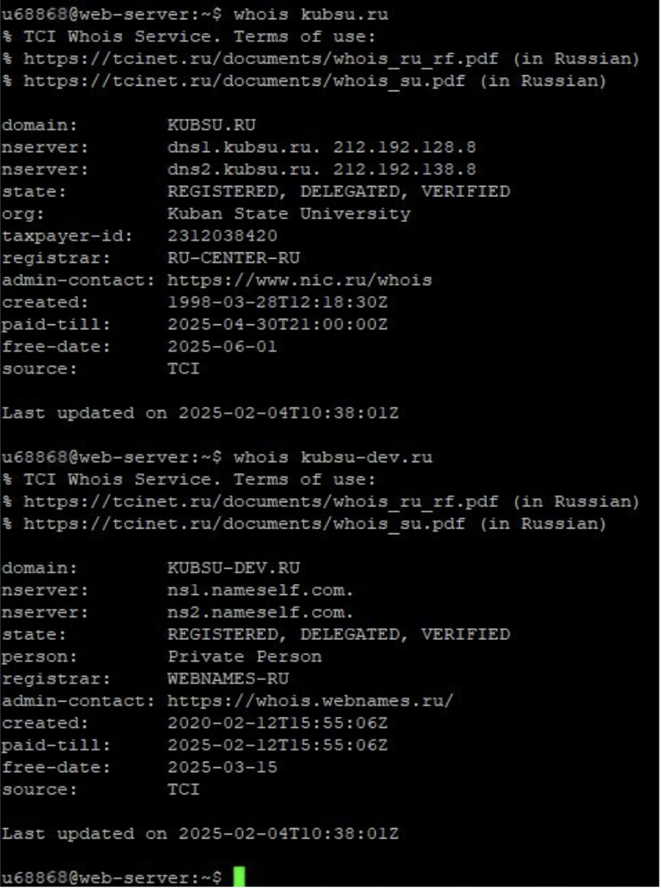

Для выполнения задания использовалась команда, которая позволяет определить IP-адрес сервера. Ниже представлен скриншот выполнения команды:
Для выполнения задания использовалась команда, которая позволяет определить A-записи (IP-адреса) и MX-записи (почтовые серверы) для доменов. Ниже представлены скриншоты выполнения команды:
Для выполнения задания использовалась команда, которая позволяет узнать информацию о домене, включая дату его регистрации. Ниже представлены скриншоты выполнения команды:
Для выполнения задания использовалась программа FileZilla для соединения с учебным сервером с моим логином и паролем по протоколу SFTP